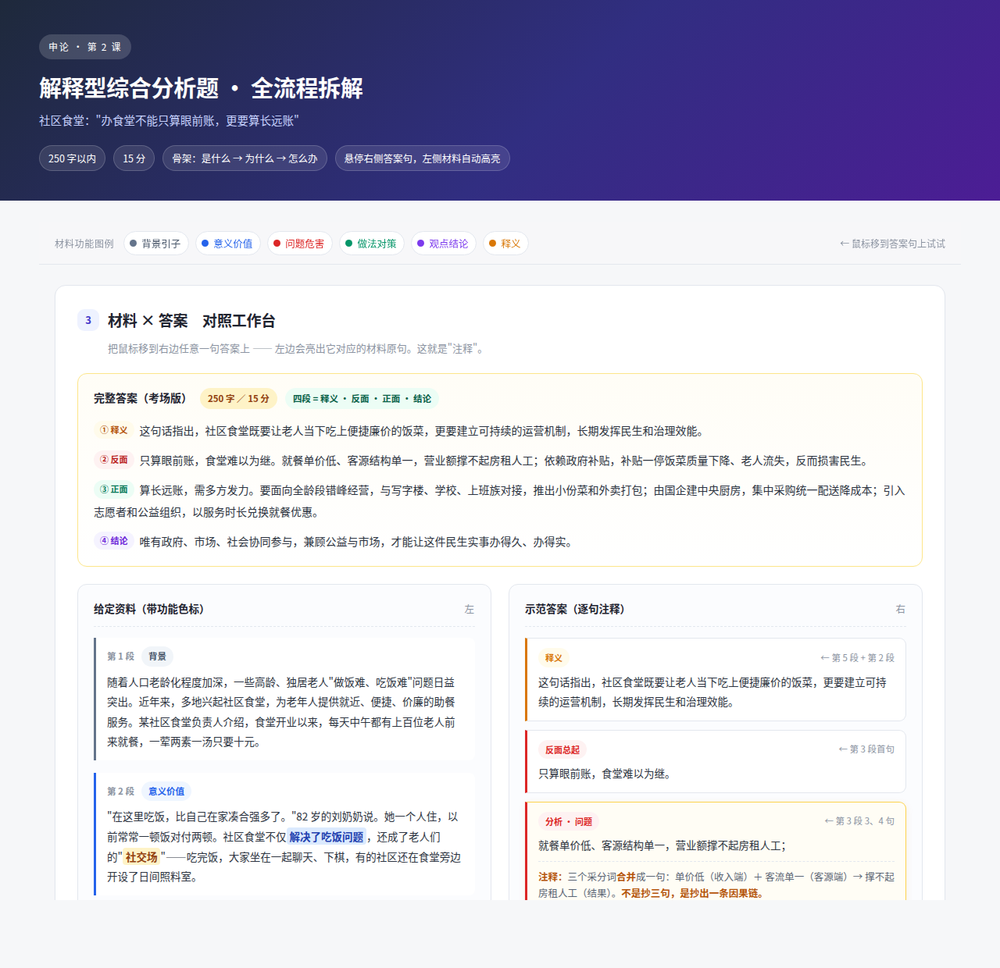
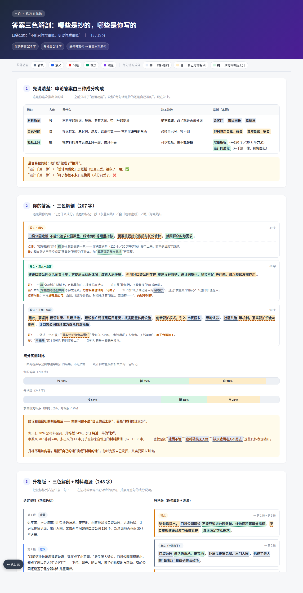
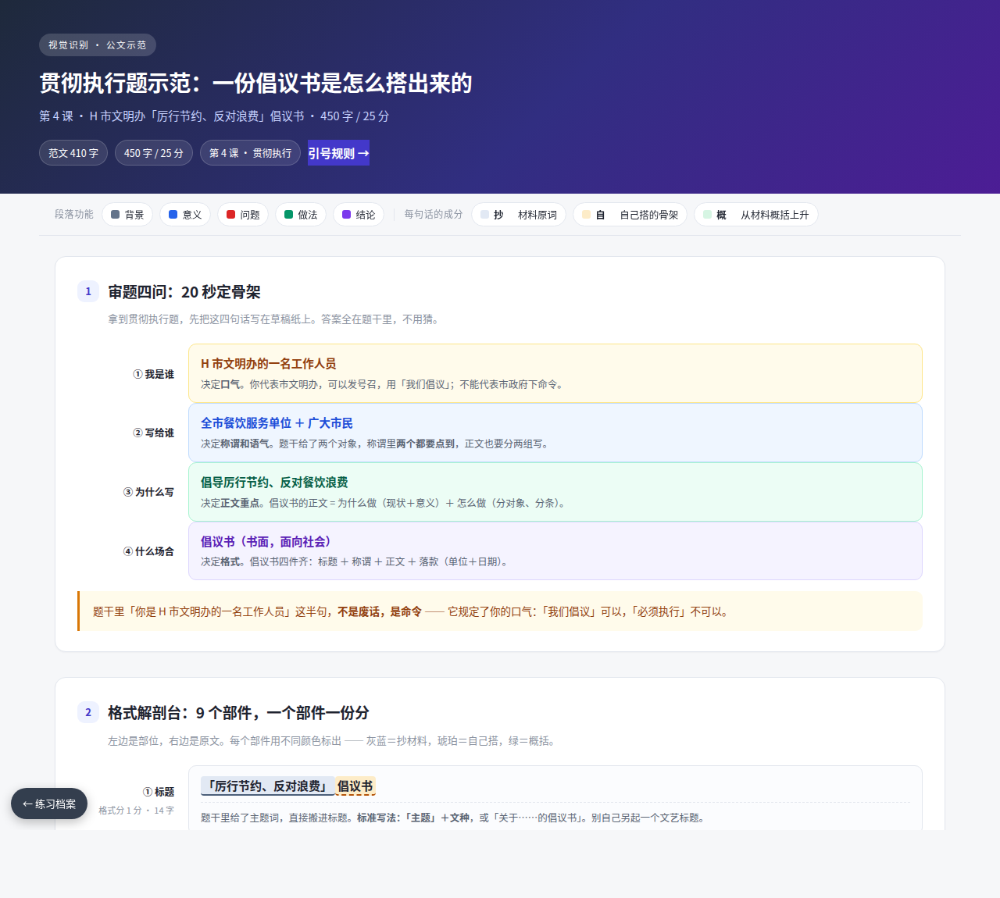
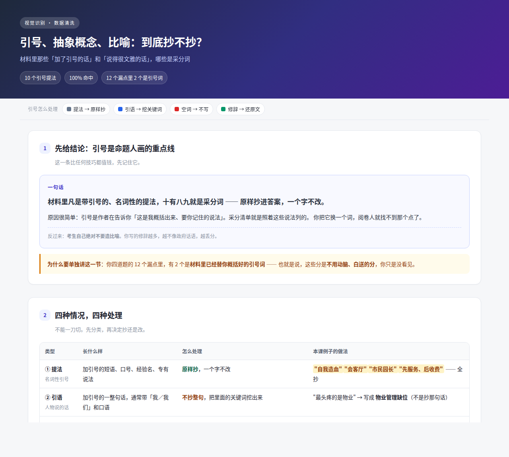

当前批次 · 四路并行 · 输入 · 任务 · 自检
算法说明 · 数据处理 · 结果分析 · 评估记录
今天的输入材料、任务清单、时间轴和交卷前自查，全在这一页。
上一个阶段结业了再进下一个。「在学」的两个阶段是当前重点，「未开始」的还没讲义。
每天只点这里：当前批次的输入材料、任务清单和交卷前自检。
说明书正文。按顺序读，一次一个阶段；读完立刻去做对应样本。
历史样本全档：原始输出、诊断结论、漏点出处、校正版、逐点解剖。

流程可视化流程可视化 · 悬停输出句自动高亮原始输入

结果分析 05哪些取自原文、哪些自行生成 · 成分实测 · 13 个评分点逐点对照
成长曲线 · 引用占比变化 · 五份分析索引 · 复现的毛病
样本 01 · 4.5/15：三色解剖 + 8 个评分点逐点对照
样本 02 · 7/10：三色解剖 + 7 个评分点逐点对照
样本 03 · 11/15：三色解剖 + 13 个评分点逐点对照
样本 06 · 15/20：三色解剖 + 10 个评分点逐点对照
样本 07 · 21/25：三色解剖 + 12 个评分点逐点对照
四轮测试的记录：结论 · 偏差出处 · 标准输出
卡住时来查：定位方法、输出公式、词表句式、评分档位、复盘流程、时长配置。

公文示范倡议书全流程示范 · 410 字：九件格式解剖 + 逐句溯源 + 字数配比

数据清洗规则10 个引号提法 100% 是评分点 · 提法／引语／空词／修辞四种处理
四种定位法 · 分段切分法 · 长度阈值 · 输出格式规范
分类 · 关联分析 · 策略生成 · 流程执行 · 长篇输出
领域词表 · 动作词库 · 句式模板 · 长文框架
每天 15 分钟积累法 · 一份样本一张卡
五轨并行 · 每日时间盒 · 12 周计划 · 记录规范
评分档位 · 评审五块模板 · 常见偏差诊断表
每次分析必须做满的九步 · 三条质量红线
总览、进度、分数、打卡；换设备或写周复盘时看。